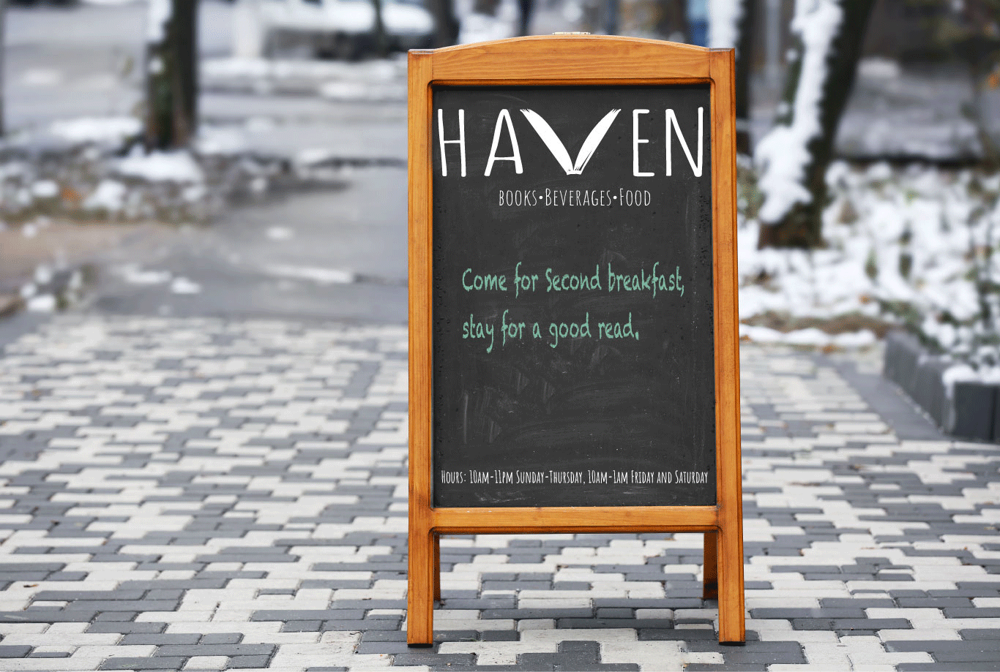
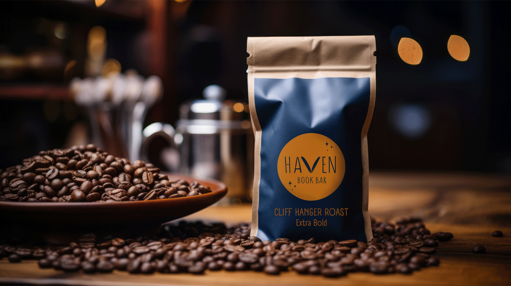
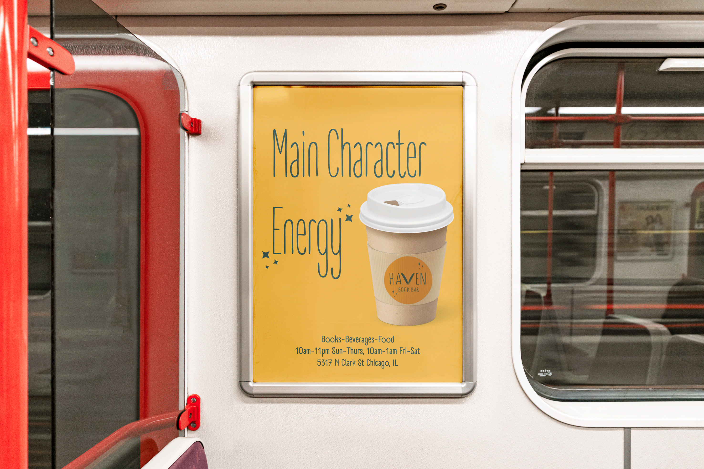

OBJECTIVE AND INSPIRATION
WHAT:
Environmental design for a fictional restaurant
WHY:
To explore typographic design through the lens of a physical environment and branded assets
In Typography class, I was able to work on an environmental design project which tasked me with creating the branding, signage, and additional assets for a fictional restaurant.
I took my inspiration from a book bar in Madison, WI called Leopold’s Cafe. From there, I deepened my research, looking at the branding and business models of other book bars in cities such as New York and Minneapolis.
I loved the idea of creating a space where introverts and extroverts alike could find a cozy reading nook or meet up with friends. My restaurant would serve brunch and espresso beverages earlier in the day, moving to cocktails and other food in the evenings. There would be a small performance space for live acoustic music, staged readings of plays, and other arts and literature focused events.
I decided on a jewel toned, cozy color palette inspired by vintage book covers and ambient low lit spaces. I wanted the restaurant to have a hidden gem vibe - something that feels cool and alluring yet well worn and comfortable.
PROCESS | LOGO

After conducting my research, I sketched out several iterations of possible logos with possible names for the restaurant.
I chose the name Haven for my restaurant, as it describes the environment within.
The font I chose to use is A Day Without Sun. Because of its thin yet varied stroke weight and slightly rounded terminals, it had a hand-written quality to it that paired well with the vector drawing of an open book I created for the V in the center. It is also quite legible in various colors and sizes, which is important for accessiblility and versitility.
I ended up designing two versions of the Haven logo. The circular logo is meant to be reminiscent of both the sun and moon, as either could be in the sky while customers enjoy a book, beverage, or event. The sparkles in the circular logo are meant to add a little bit of whimsy while also reminding customers of the stars, reinforcing the idea that this is also an evening establishment. It is colorful and eye catching in a way that makes it ideal for glass window signage. The second logo is versitile and excellent on black and white signage or on the cover of the menu.
OUTCOME | SIGNAGE

Hanging street signage, outdoor and indoor chalkboard signage, and glass window signage were created.
The simpler version of the logo worked well in black and white, which made it a natural choice for chalk boards and the black and white hanging sign. The more colorful logo worked well as a window sign.
OUTCOME | MENU AND ASSETS
The menu design calls upon the themes of arts and literature. Repurposed vintage books have the pages removed and replaced with menu pages. The covers of the books are embossed with the Haven logo.
The inner pages of the menu feature a watercolor border, a callback to the arts and literature heart of the restaurant. Over the watercolor are some gold flecks to tie it together with the gilded cover.
As a special asset, I designed packaging for bags of Haven branded whole bean coffee. These reading-themed blends would be sold in the book bar.
As an additional asset, I created an ad for Haven which could be seen in print or digital form.